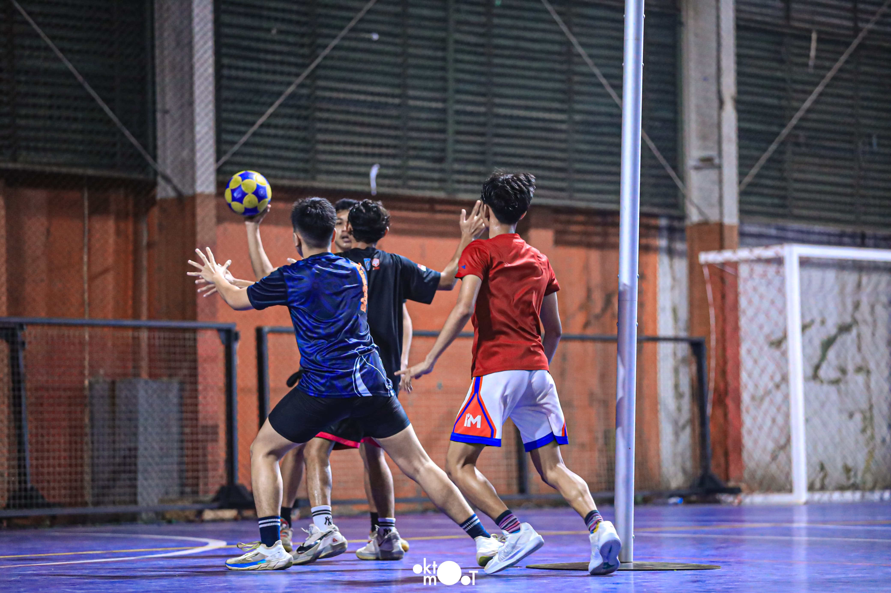
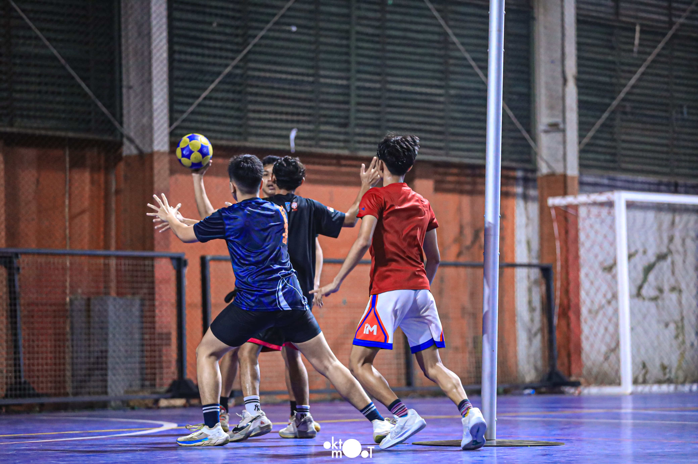
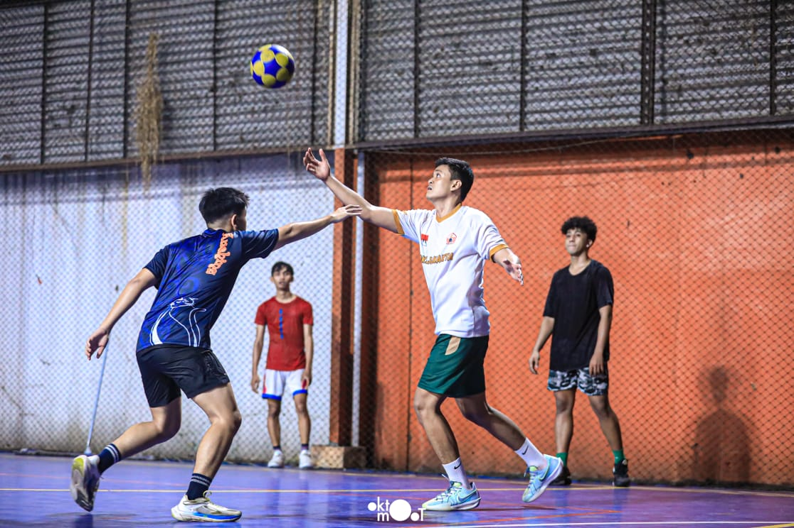
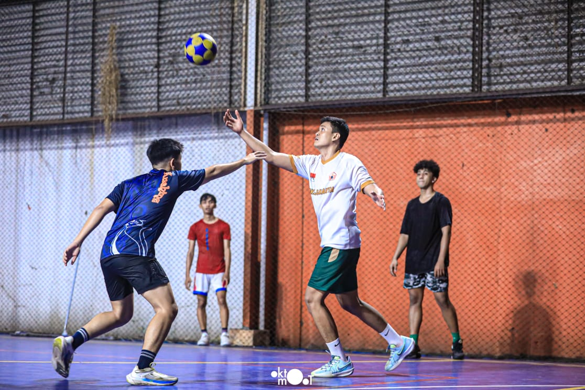
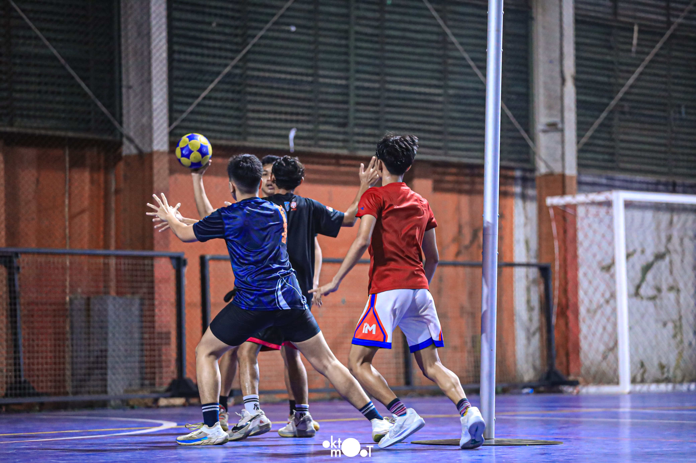
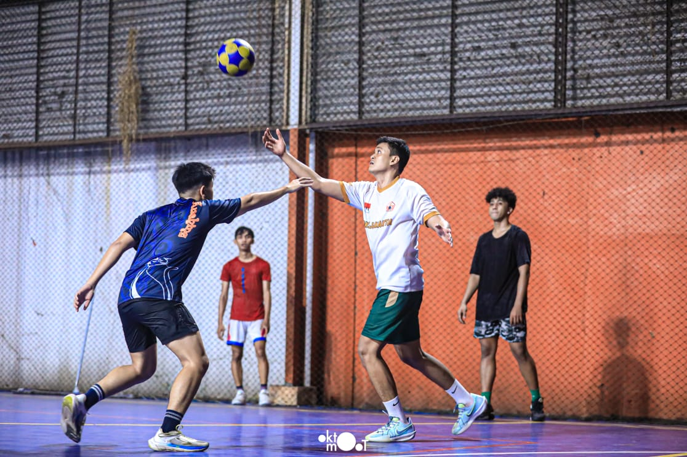

Korfball Gallery
 


 

Korfball is a mixed-gender team sport similar to basketball. Each team consists of 8 players (4 men and 4 women). The goal is to score by throwing the ball into a high basket without a backboard. Korfball emphasizes teamwork and gender equality.

